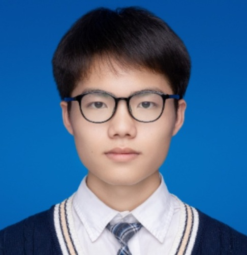

Jiaxuan Wang
Undergraduate, Class of 2027
| Phone 18879965616 | Email wangjx_hust@hust.edu.cn |

Education
Huazhong University of Science and Technology, School of Electronic Information and Communications, B.Eng. in Electronic Information Engineering
Sep. 2023 - Jun. 2027
Project-Based Information Engineering Experimental Class ("Seed Class")
Average: 84.2 | Ranking: Top 30%
Selected High-Scoring Core Courses: Fundamentals of Computer Programming in C (96), Digital Electronics (92), Stochastic Processes (92), Analog Electronics (85), Engineering Drawing I (94)
English Proficiency: CET-6 519, CET-4 585
Current Captain of Dian Team; Current Leader of the Robotics Group, Dian Team
Publications and Conferences
- Yefan Lin, Jiaxuan Wang, Baoyu Liu, Zheng Lv, and Xiaojun Hei, "Pallet-ACT: A Unified Data-Training-Inference Framework for Industrial Robotic Palletizing." 7th Information Communication Technologies Conference (ICTC), Nanjing, China, May 2026. (Passed initial review)
- Yuhan Huang, Zijian Ning, Ziyuan Wang, Jiaxuan Wang, Xiaojun Hei, "Reinforcement Learning with Stage-Wise Model Fusion for Sequential Object Manipulation Tasks." IEEE International Conference on Robotics and Biomimetics (ROBIO), Chengdu, China, December 2025.
Skills and Tools
- Programming Languages: Proficient in Python and C.
- Robot Control and Real-World Deployment: Extensive hands-on experience with operation, debugging, and deployment of 6-axis robotic arms; familiar with ROS 2 and the MoveIt 2 motion planning framework; experienced in applying reinforcement learning (RL) and imitation learning (IL) algorithms to robotic control and real-world tasks.
- Simulation and 3D Modeling: Skilled in using the MuJoCo physics engine for robotic simulation and testing; proficient in SolidWorks for 3D modeling and mechanical structure design; experienced in practical 3D printing workflows.
- Development Environments and Productivity Tools: Familiar with Linux; skilled with mainstream IDEs such as VSCode; familiar with VMware, Anaconda, and environment management tools; experienced in using modern AI tools to support programming, documentation, and research work.
Competitions and Research Projects
ICRA 2025 Sim2Real Challenge | International Second Prize (4th Place Worldwide)
- Served as a core member of DianRobot, demonstrating strong sim-to-real transfer capability and algorithmic control performance in a complex sequential object manipulation track.
Intelligent Robotic Arm Application for Chemistry Experiments Based on Imitation Learning | Provincial Undergraduate Innovation Project, Ongoing
2025
- Served as a core contributor and project lead, deeply involved in project execution and responsible for accurate robotic grasping of chemistry laboratory instruments. Advisor: Xiaojun Hei.
Reinforcement-Learning-Enabled Robotic Coffee Service Application | Second Prize, Undergraduate Group, Central-South China Regional Competition
2024
- Solved robotic arm joint zero-drift issues during coffee cup grasping through visual compensation; implemented finger localization and grasp-success detection using a bounding-box-based approach.
Robot Coffee-Making Based on Reinforcement Learning | Industry Collaboration Project, Completed
Jul. 2023 - Apr. 2024
- Participated in an industry collaboration project with CloudMinds Robotics; contributed to robotic coffee service design and system development, and built the external demonstration workflow for coffee-making.
Dian Team Reception Robot Application Design | University-Level Undergraduate Innovation Project, Completed with Excellence
2023
- Participated in the full application design process for a reception robot, including dance motion design and choreography. Advisors: Xiaojun Hei and Chengwei Zhang.
Embedded Systems Course Project: Intelligent Heated Cup Mat | Core Developer
Sep. 2025 - Mar. 2026
- Contributed to the overall software and hardware development of an intelligent heated cup mat, leading enclosure and structural design with SolidWorks.
Additional Teaching and Engineering Projects
- Core Course Development: Contributed to the development of the Excellent Engineer Training course Service Robot Application Design (Jan. 2026 - Dec. 2027, ongoing).
- Textbook Development: Contributed to the writing and development of the Excellent Engineer Training textbook Service Robot Application System Design and Experiments (Jan. 2026 - Dec. 2027, ongoing).
- Teaching Research Project: Participated in the teaching research project "A Robotics Training System for Integrated Undergraduate-to-Graduate Professional Degree Education Based on Deep Industry-Education Integration" (Jan. 2025 - Dec. 2026, ongoing).